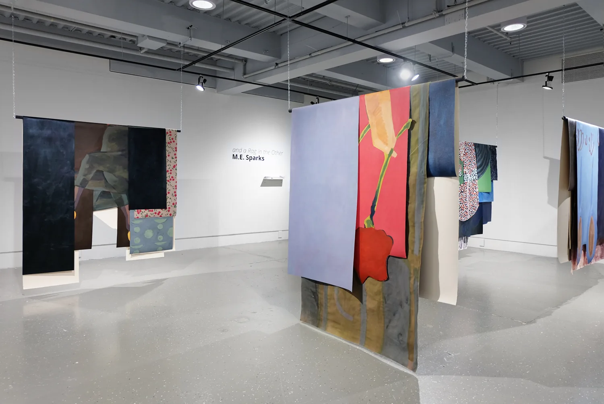
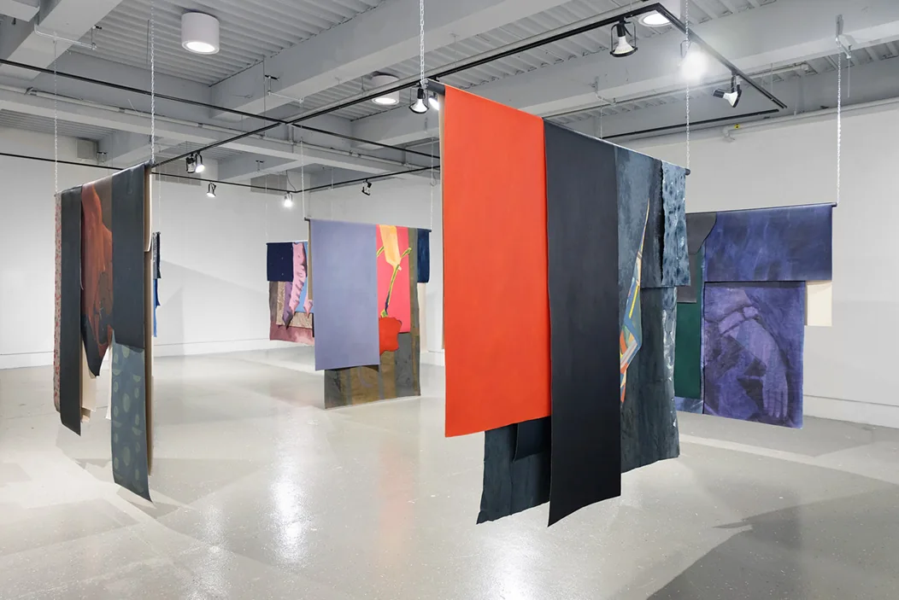
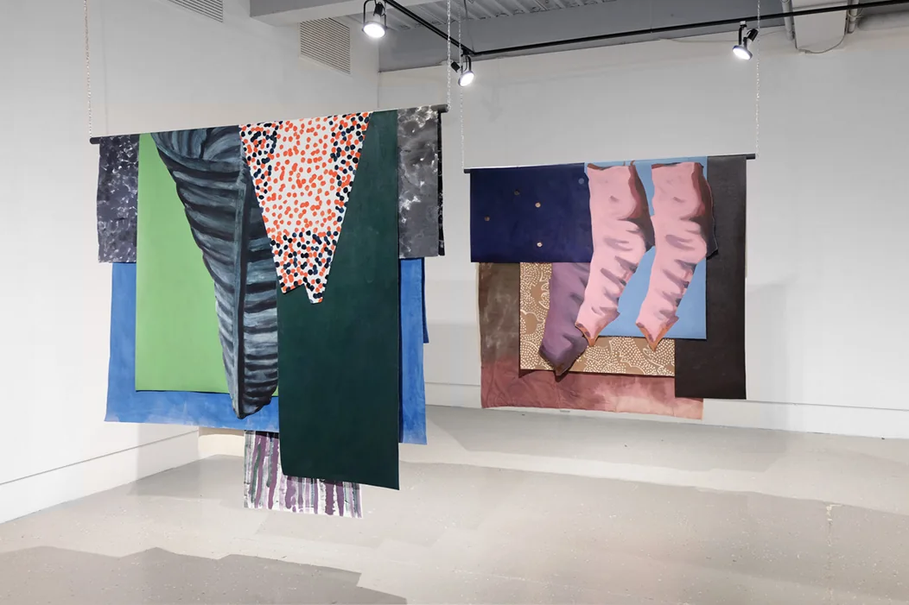
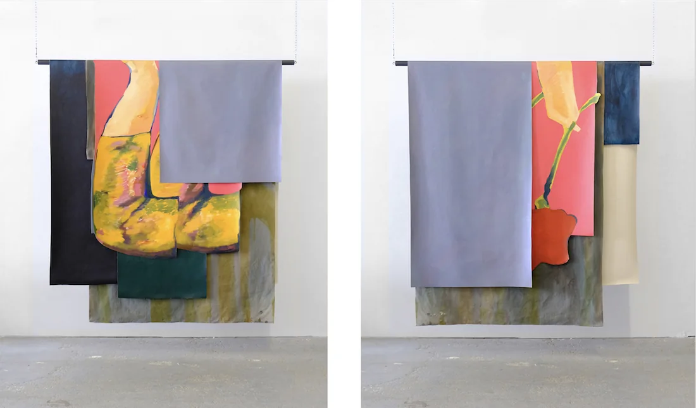
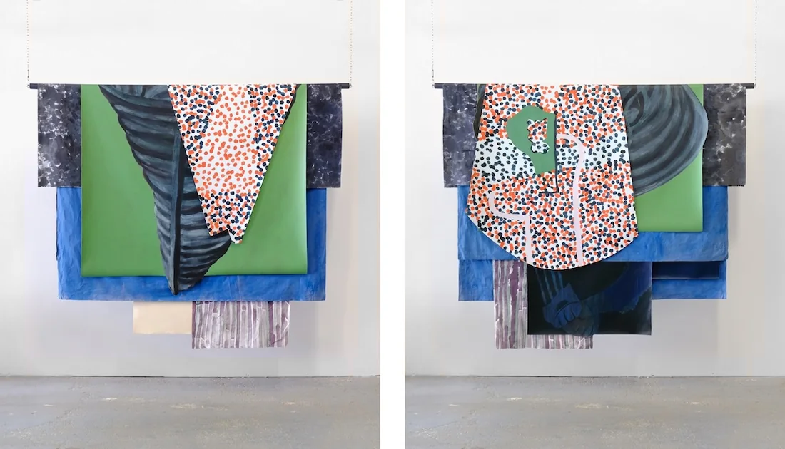

M.E. Sparks
painting
projects
about
and a Rag in the Other
, 2022,
Alternator Centre for Contemporary Art
exhibition text




Rose Offering
, 2022, oil and acrylic on canvas and muslin, approximately 68” x 61”

Portrait of a Young Girl
, 2022, oil and acrylic on canvas and muslin, approximately 69” x 65”